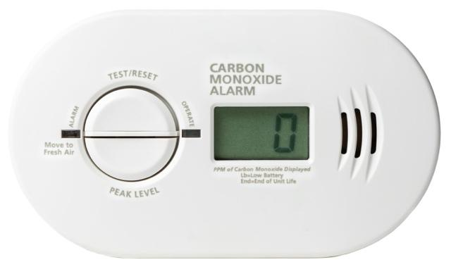

Carbon monoxide, or CO for short, is a dangerous gas you cannot see or smell. Burning fuels like gasoline, propane, natural gas, wood or wood products, charcoal, or oil produces CO.
Breathing in even a small amount of this gas can make you very sick. Carbon monoxide poisoning happens when you breathe in a large amount of CO. This can damage your heart and brain. It can even kill you.
If you or someone you know is exposed to CO, it is vital to act fast. Get out into fresh air right away, then call for help.
CO comes from burning fuel. It can develop in your home when:
A car is running in the garage.
Gas appliances like stoves or heaters are not working right.
Charcoal grills are used indoors.
Fireplaces or wood stoves have poor airflow. That is why CO poisoning is more common in winter, especially in colder climates.
Gas or propane appliances like generators are used without proper ventilation.
Symptoms vary, depending on how much CO is breathed in and for how long. It can feel like the flu without a fever. Other symptoms can include:
A headache, which should get better when you leave the area of exposure
Dizziness
Nausea or vomiting
Trouble breathing or chest pain
Confusion or trouble thinking clearly
Feeling tired or sleepy, especially if it is hard to wake up
New or worsening weakness or numbness
Your care team may use a blood test to find out if there is CO in your blood. This helps them see how severe the poisoning is and decide on treatment.
Breathing oxygen through a mask can help remove CO from your blood.
In severe cases, a hyperbaric oxygen chamber can give high-pressure oxygen for quicker recovery.
To help prevent CO poisoning:
Install a CO detector on every floor of your home, along with smoke detectors. Replace batteries every 6 months or as stated in the instructions.
Have heaters and appliances checked every year.
Never leave a car running in the garage, even with the door open.
Use outdoor equipment like grills and generators outside, away from windows and doors.

Most people recover fully if treated quickly. If not treated, CO poisoning can lead to brain damage, heart issues, or death. Fast action and quick medical help are vital.
If you have a possible or known exposure where you live, do not return to your home or building until the source of carbon monoxide has been found and fixed. Professionals, such as the fire department, gas company, or a certified technician, must check your appliances and make sure it is safe to go back inside. Returning too soon can be dangerous, even if you feel fine.
Call Poison Control if:
You had a possible CO exposure, but have no symptoms.
You had a possible CO exposure, but only have mild symptoms like headache, nausea, or dizziness. Even if the symptoms went away after getting fresh air, you should still speak with a professional. Mild or unclear symptoms should not be ignored if there has been any possible CO exposure.
A CO alarm went off, but no one is feeling sick.
Poison Control can provide expert guidance and next steps.
Get help right away if:
You have any symptoms that are severe.
You have symptoms that return or worsen after speaking with Poison Control.
The exposure happened to someone who is pregnant or an infant.
Symptoms of CO exposure include:
You are vomiting.
You have a severe headache.
You have fatigue, feel very tired, or have trouble staying awake.
Your breathing changes, or you have trouble breathing.
You are confused, lose consciousness, or have trouble talking.
You have chest pain or tightness in the chest.
You have weakness, numbness, or cannot move parts of your body.
You have a seizure or sudden loss of movement.
Thank you for trusting us with your care. We are here to support you and want you to feel your best. Contact us with any questions.
IF YOU HAVE A MEDICAL EMERGENCY, CALL 911 OR GO TO THE EMERGENCY ROOM.
The information presented is intended for general information and educational purposes. It is not intended to replace the advice of your health care provider. Contact your health care provider if you believe you have a health problem.
Last updated May 2025
© 2025 Mytonomy, Inc. All rights reserved.